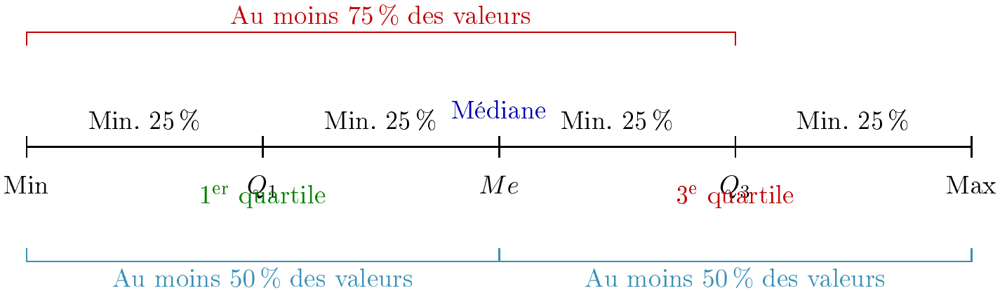

Chapitre 6 : Statistiques descriptives
Seconde · Chapitre 6 — Statistiques descriptives · cours de Frederik de Peyrelongue
I. Définitions et vocabulaire
- L'ensemble sur lequel porte l'étude statistique s'appelle la population. Un élément de la population s'appelle un individu. L'objet étudié s'appelle le caractère.
- Si le caractère étudié prend des valeurs numériques, on dit qu'il est quantitatif. Sinon, on dit qu'il est qualitatif.
- Un caractère quantitatif peut être discret (il prend des valeurs isolées) ou continu (il prend toute valeur dans un intervalle appelé classe).
- Les différentes valeurs prises par un caractère s'appellent les modalités (ou modes).
- L'effectif d'une valeur est le nombre d'individus ayant cette valeur.
- L'effectif total (noté $N$) est le nombre d'individus dans la population étudiée.
La fréquence d'une valeur est :
\[ f=\frac{\text{Effectif d'une valeur}}{\text{Effectif total}} . \]
On peut résumer les données d'une série statistique par un tableau.
| Caractéristique étudiée | Valeur 1 | Valeur 2 | … | Valeur $n$ |
| Effectif | ||||
| Fréquence |
II. Médiane et écart interquartile
2.1 La médiane, indicateur de tendance centrale de la série
Soit une série de $N$ valeurs rangées par ordre croissant. La médiane $Me$ est le nombre défini par :
- si $N$ est impair, $Me$ est la valeur centrale : elle correspond au rang $\dfrac{N+1}{2}$ dans la série classée par ordre croissant ;
- si $N$ est pair, $Me$ est la moyenne des deux valeurs centrales, c'est-à-dire la moyenne des valeurs ayant les positions $\dfrac{N}{2}$ et $\dfrac{N}{2}+1$.
Méthode :
- Ordonner la série par ordre croissant.
- Compléter les effectifs.
- Compléter les effectifs cumulés croissants (E.C.C.).
- Selon que $N$ est pair ou non, venir chercher la valeur centrale ou les deux valeurs centrales.
2.2 Les quartiles
- Le premier quartile, noté $Q_{1}$, est la plus petite valeur de la série telle qu'au moins $25\,\%$ des valeurs soient inférieures ou égales à $Q_{1}$.
- Le troisième quartile, noté $Q_{3}$, est la plus petite valeur de la série telle qu'au moins $75\,\%$ des valeurs soient inférieures ou égales à $Q_{3}$.

Le rang du $1$er quartile d'une série de $N$ valeurs est le plus petit entier supérieur ou égal à $\dfrac{N}{4}$.
Le rang du $3$e quartile est le plus petit entier supérieur ou égal à $\dfrac{3N}{4}$.
2.3 L'écart interquartile : un indicateur de dispersion
- L'écart interquartile est la différence $Q_{3}-Q_{1}$.
- L'intervalle interquartile est l'intervalle $[Q_{1}\,;Q_{3}]$.
L'écart interquartile indique la longueur de l'intervalle dans lequel la moitié centrale des valeurs de la série sont comprises.
Au moins $50\,\%$ des valeurs de la série sont comprises dans l'intervalle interquartile.
III. Moyenne et écart-type
On considère ici la série statistique donnée dans le tableau ci-dessous, et on note $N=n_{1}+n_{2}+\dots+n_{p}$ l'effectif total.
| Valeur | $x_{1}$ | $x_{2}$ | … | $x_{p}$ |
| Effectif | $n_{1}$ | $n_{2}$ | … | $n_{p}$ |
3.1 La moyenne pondérée : indicateur de tendance centrale
La moyenne pondérée de la série ci-dessus est le nombre, noté $\overline{x}$, tel que :
Nombre d'appels reçus par jour par un standardiste pendant $20$ jours :
| Nombre d'appels | $8$ | $9$ | $11$ | $12$ | $14$ | $16$ |
| Effectif | $1$ | $3$ | $5$ | $5$ | $2$ | $4$ |
En moyenne, ce standardiste reçoit $12{,}1$ appels par jour.
Soient $a$ et $b$ deux nombres réels.
Si une série de valeurs $(x_{i})_{1\leqslant i\leqslant p}$ a pour moyenne $\overline{x}$, alors la série de valeurs $(a\,x_{i}+b)_{1\leqslant i\leqslant p}$ a pour moyenne $a\,\overline{x}+b$.
Preuve : calculons la moyenne de la série $(a\,x_{i}+b)$ :
3.2 L'écart-type : un indicateur de dispersion
L'écart-type d'une série de valeurs $(x_{i})_{1\leqslant i\leqslant p}$ est le nombre positif, noté $\sigma$, défini par :
Plus l'écart-type est grand, plus les valeurs sont dispersées autour de la moyenne.
On reprend l'exemple précédent :
En moyenne, le nombre d'appels par jour s'écarte de $2{,}4$ par rapport à $\overline{x}$.